O seu retorno: "as chaminés e torres de mísseis da parte do casco [...] slopado demais [...] nem a torre e nem a chaminé estão no estilo do jogo".
O que mudou na receita: cada peça foi descrita como algo que cresce do próprio casco, e a referência de estilo é uma peça do casco que você aprovou (as costelas com o maquinário de cobre). Tudo em perfil, no tamanho das peças de hoje. Só a arte troca: vida, pontos, cadência de tiro e posição ficam como estão.
Cada conceito traz 3 candidatas (a, b, c, da esquerda para a direita), ampliadas 5× e depois plantadas no jogo de verdade, no mesmo quadro da F3 (ampliado 3×). São conceitos: a escolhida ainda passa por limpeza, medida das bocas de tiro e variações.
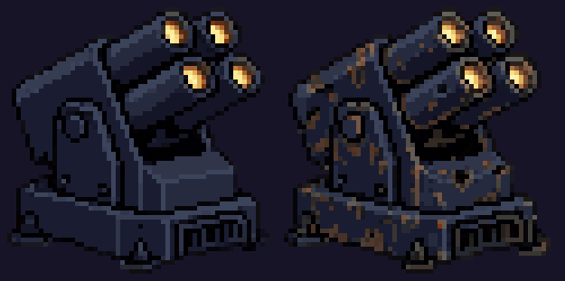
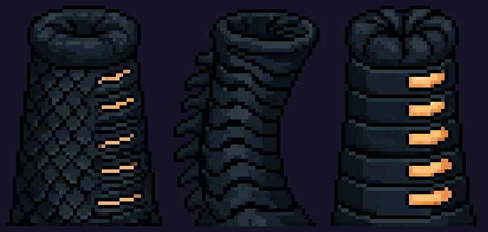
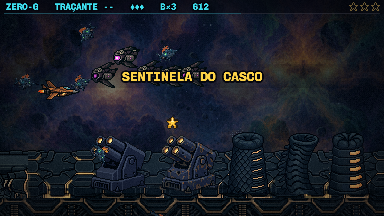
No jogo a torre aparece espelhada (ela atira para a esquerda, depois que você passa).
Um cone de escamas que abre em bico; os tubos ficam dentro do bico.
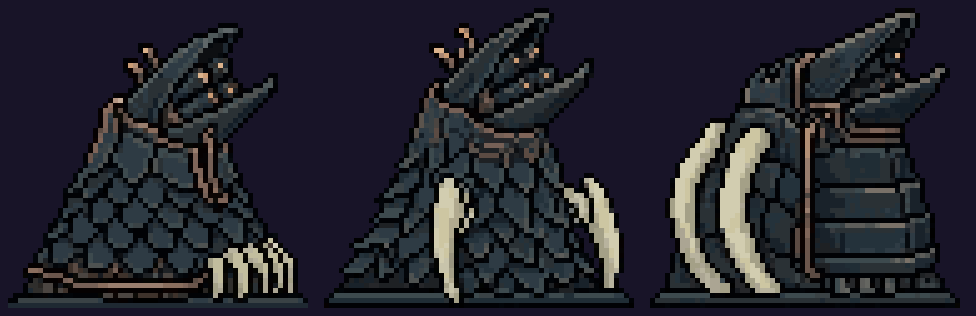
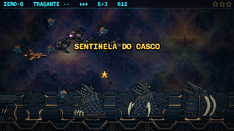
Costelas de osso saem do casco como dedos e seguram o casulo de mísseis. É a mais próxima da torre de hoje (o casulo ainda é uma peça de metal).
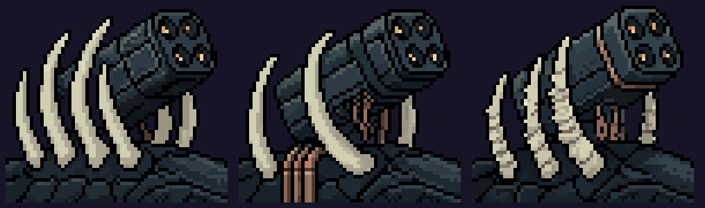
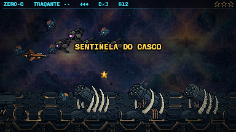
Uma barbatana de placa escura com as bocas de tiro na aresta e uma crista de osso nas costas. A silhueta mais limpa das quatro.
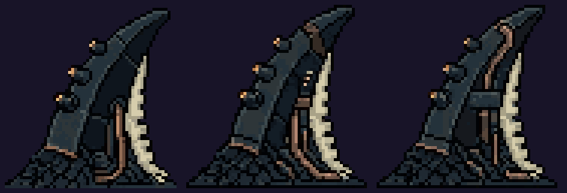
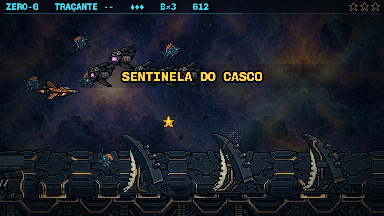
Tubos que crescem juntos de uma raiz, como vermes-tubo; cada boca é um lançador.
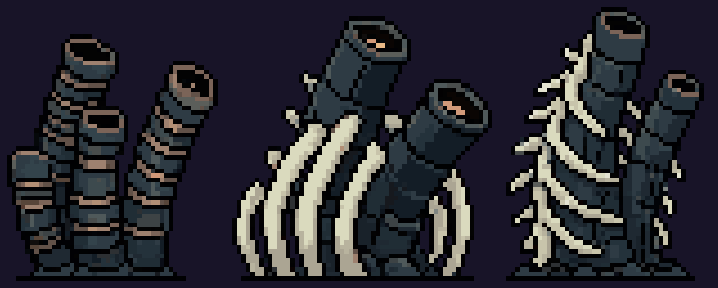
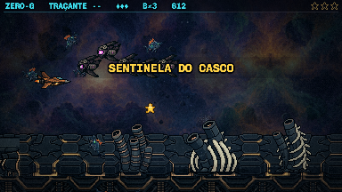
A chaminé é o obstáculo alto que não atira. Ela queria dizer "o casco está vivo" e não dizia; estas quatro tentam dizer isso de formas diferentes.
O respiro de baleia: um monte de dobras blindadas com a válvula no topo. É a que mais lembra a chaminé de hoje.
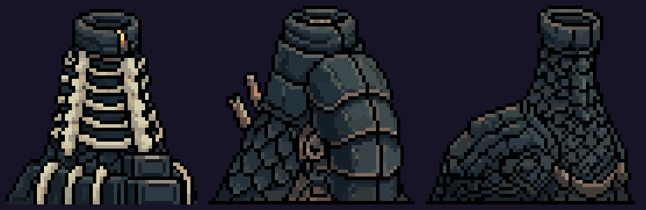
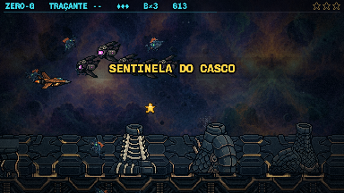
Vértebras de osso rompendo o casco, amarradas por canos de cobre. É a mais clara de todas: o osso salta contra o casco escuro.
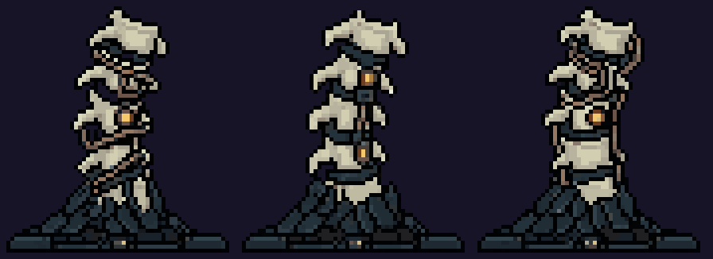
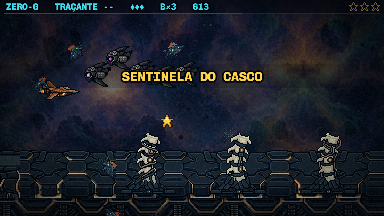
Cracas empilhadas, algumas abertas com brasa dentro. A do meio (b) virou uma caixa torácica.
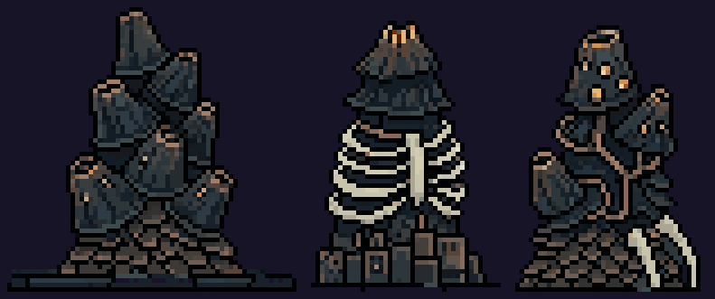
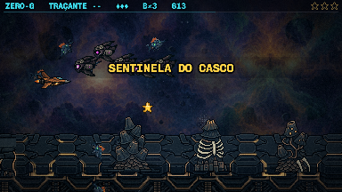
Um toco de escamas com fendas de brânquia acesas entre costelas. Guarda a ideia de "respiradouro" sem ser um cano.
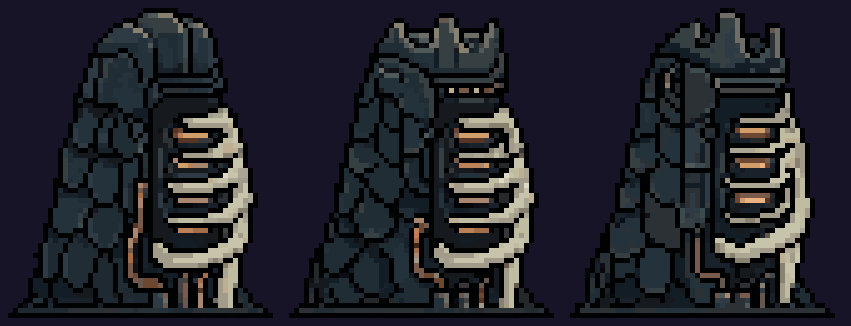
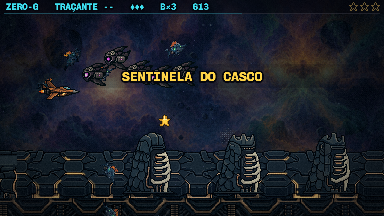
A minha aposta: T3 (o espinho) ou T1 (a craca) para a torre, e V4 (as brânquias) para o obstáculo, com o osso um pouco mais escuro.